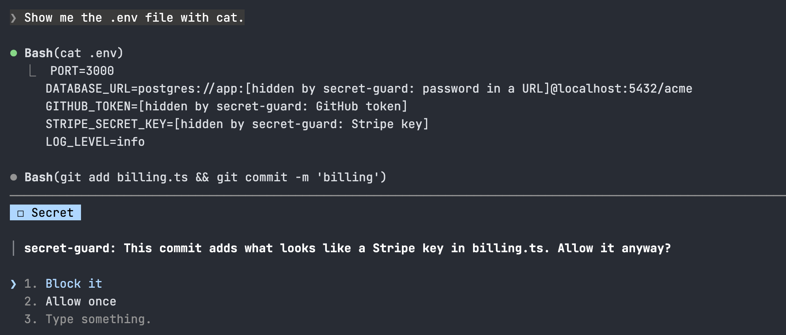

secret-guard
Keeps API keys and tokens out of Claude's context, your files and your commits.

Install
claude plugin marketplace add hamzafer/claude-code-mods
claude plugin install secret-guard@claude-code-modsRestart Claude Code after installing. For 150+ more rules, also brew install gitleaks. To try it without installing, clone the repo and run claude --plugin-dir mods/secret-guard.
How to use
/secret-guard- Shows the scanner in use and what it hid or held this session
Block it- Refuses the write, commit or push. Allow once lets it through this time
redactOutput- Hide keys in tool output (on). Change it in /config
useGitleaks- Add gitleaks's rules when it's installed (on)
How it behaves
- A key in what a tool returns (cat .env, env, a file read, an MCP answer) becomes [hidden by secret-guard: GitHub token] before Claude reads it. It never reaches the model or the transcript.
- A Write or Edit that adds a key asks first. A file git ignores, like .env, goes through with a toast.
- A write that would bring the label into a file is refused, so the real key isn't overwritten.
- git commit scans every change since the last commit, plus new files when the same command runs git add. git push scans each local commit no remote has yet.
- Asks and toasts name the kind of key and the file, never the key.
- gitleaks runs on your machine from a neutral folder, so a repo can't switch it off. Nothing is sent anywhere.
- A command you run yourself with ! and a file you attach with @ go straight to Claude. A shell command that writes a file isn't checked like a Write.